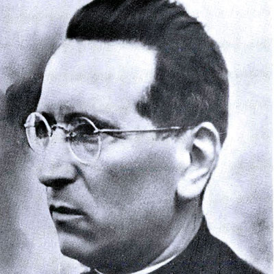

Isusovački blaženici
Isusovac · Svećenik · Mučenik
Bl. Giovanni Fausti
1899.–1946.
Talijanski isusovac u Albaniji predavao je filozofiju, vodio sjemenište i promicao susret kršćana i muslimana, a pod komunističkom vlašću podnio je mučeništvo.
Tekst je preveden i prilagođen uz pomoć umjetne inteligencije.

Izvor slike
- Spomendan
- 4. ožujka
- Zaštitništvo
- Nije navedeno u izvoru
- Životni vijek
- 1899.–1946.
- Djelovanje
- Obrazovanje i poučavanje vjere · Pisanje, znanost i umjetnost · Progoni i progonstvo · Mučeništvo · Dijalog i pomirenje
- Razdoblje
- 19., 20. stoljeće
- Rođenje
- 19. listopada 1899., Brozzo
- Ulazak u Družbu
- 1924.
- Mučeništvo
- 4. ožujka 1946., Skadar
- Beatifikacija
- 5. studenoga 2016.
U kalendaru zbirke koristi se dan smrti. Taj datum nije zasebna potvrda liturgijskoga spomendana.
Životopis
Giovanni Fausti rođen je 1899. u Brozzu kraj Brescie. Iz biskupijskoga sjemeništa došao je do svećeničkoga ređenja 1922., a 1924. pristupio je Družbi Isusovoj. U Skadru je predavao filozofiju. Bolest ga je od 1933. zadržala u Italiji, no ponovno se vratio u Albaniju kao rektor sjemeništa. U Tirani je tijekom rata pomagao Talijanima i Albancima, kršćanima i muslimanima.
Nakon uspostave komunističke vlasti 1945. imenovan je viceprovincijalom. Uhićen je posljednjega dana te godine, dva mjeseca proveo u samici i bio mučen radi iznuđivanja priznanja političke izdaje i špijunaže. Osuđen je na smrt te 4. ožujka 1946. strijeljan na katoličkom groblju u Skadru. S Dajanijem i Pantalijom pripada trideset osmorici albanskih mučenika proglašenih blaženima 2016.
Njegovo poznavanje muslimana nije ostalo samo svakodnevno iskustvo. Na poticaj pape Pija XI. početkom tridesetih godina proučavao je islam i pisao za La Civiltà Cattolica. U Gallarateu je, nadahnut djelovanjem Louisa Massignona, okupljao molitvene skupine za muslimane. Talijanski isusovci u njegovu životu posebno ističu taj pionirski apostolat. Prijateljevao je s Giovannijem Battistom Montinijem, budućim Pavlom VI.; briga za druge vjere i vjernost vlastitoj Crkvi nisu mu bile odvojene zadaće.
Posljednja noć zatočenika sačuvana je u svjedočanstvima kao vrijeme molitve i međusobne sakramentalne pomoći. Fausti i drugovi ispovjedili su se jedni drugima, a iz ćelije su se čuli molitva i pjesma. Prema prikupljenim iskazima na stratište su odvedeni pjevajući marijanske litanije i opraštajući ubojicama. Njihova beatifikacija u Skadru okupila je različite staleže Crkve: uz svećenike i redovnike u skupini su bili laici i mladi ljudi. Fausti je u toj zajedničkoj povijesti ostao prepoznatljiv po duhovnoj čvrstoći i otvorenosti prema muslimanima.
Tekst je preveden i prilagođen uz pomoć umjetne inteligencije.
Pročitaj više na izvornoj stranici ↗